使用 SIMATIC NET OPC Server 可以与 S7-1200 CM1243-5 建立 S7 通信，除此之外，还可以使用另外一种通信方式―― DP 主从通信（PC Station 做 DP 从站，1200 做 DP 主站），下面详细介绍使用方法。
硬件：
CPU 1214C DC/DC/DC，V2.2 （6ES7 214-1AE30-0XB0）
CM1243-5 （6GK7 243-5DX30-0XE0）
CP5612 （6GK1561-2AA00）
软件：
Step7 V12 SP1
SIMATIC NET V8.2
使用 STEP7 V12 创建一个新项目，并通过“添加新设备”组态 S7-1200 站PLC_1，选择 CPU1214C DC/DC/DC V2.2 创建项目。如图 1 所示。
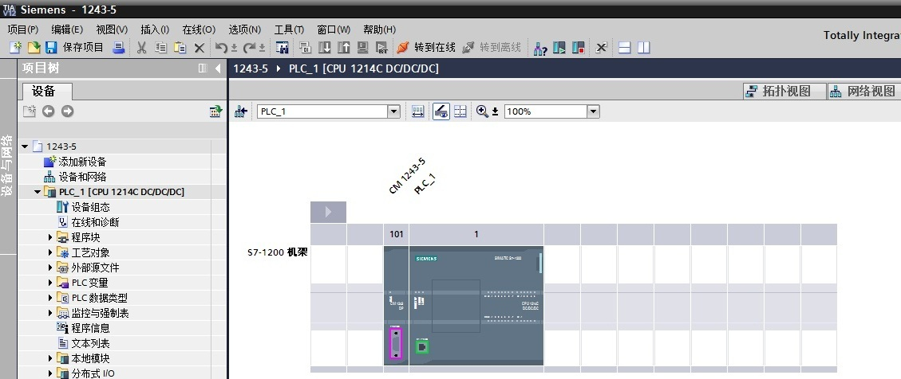
图1. 创建 S7-1200 项目组态 CM1243-5，为 CM1243-5 添加子网 PROFIBUS_1，分配站地址为 2。如图 2 所示。
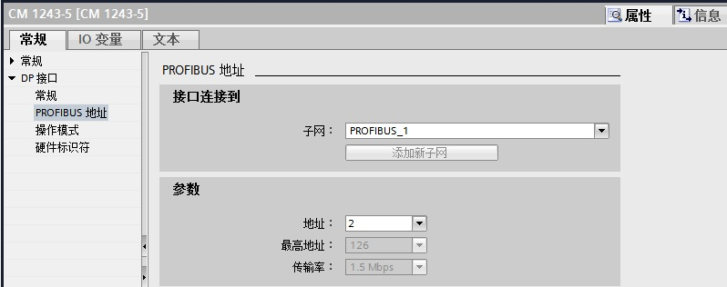
图2. 组态 CM1243-5
再次通过“添加新设备”创建 PC 站，在 “PC 系统”里，选择 PC station，插入一个 PC 站。如图 3 所示。
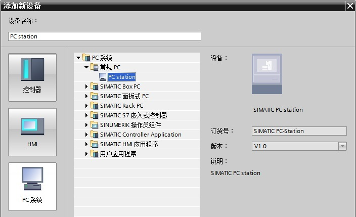
图3. 插入 PC 站
在“用户应用程序”中，将“OPC服务器”插入第 1 槽；在“通信模块”中，将“CP5612”插入第 2 槽。如图 4 所示。
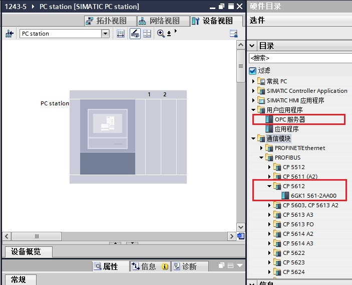
图4. 创建 PC 站
在将“OPC服务器”插入第 1 槽之前，请先选择 OPC SERVER 的版本。如图 5 所示。
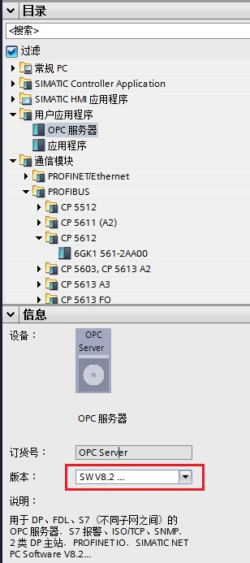
图5. 选择 OPC SERVER 的版本
在 PC 站的设备视图中，进入 CP5612 卡的属性框，在“PROFIBUS 地址”中选择子网“PROFIBUS_1”，DP 地址分配成 3。如图 6 所示。
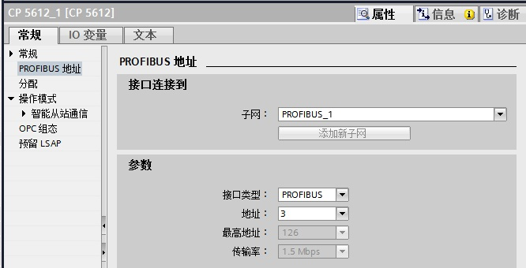
图6. CP5612分配DP地址
在“操作模式”中选择“DP 从站”，在“分配的 DP 主站”选择“PLC.CM1243-5.DP 接口”。如图 7 所示。
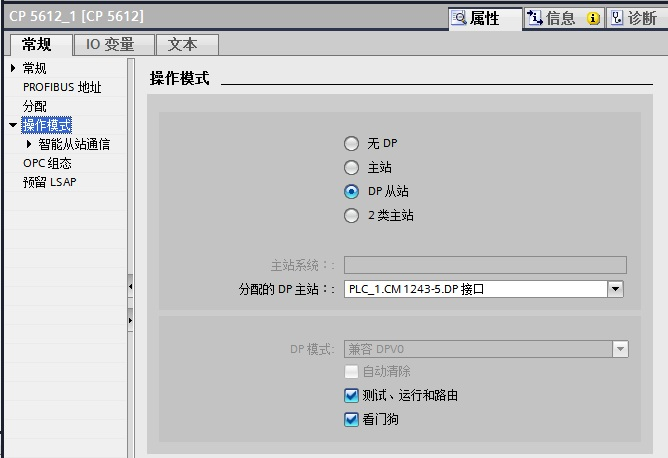
图7. CP5612 选择 DP 从站
在“智能从站通信”中，添加 2 个传输区，一个是输入区，一个是输出区（注意图8 红框中描述的是主站地址，分别从 QB2 和 IB2 开始，该地址在后面通信中将会使用到，请留意）。如图 8 所示。
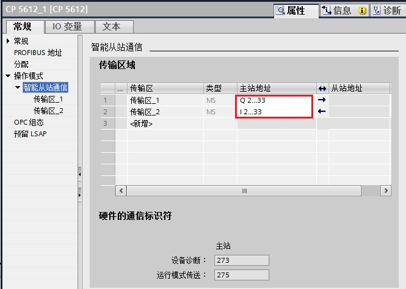
图8. 组态从站传输区地址
在 PC 站的属性框中，在“XDB 组态”中勾选“生成 XDB 文件”，指定 XDB 文件路径，再将 PC 站编译，在指定路径中生成一个 XDB 文件。如图 9 所示。
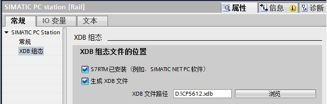
图9. 生成 XDB 文件
从电脑的右下角双击“Station Configuration Editor”，进入 Station Configuration Editor 对话框，点击“Import Station...”，将图 9 生成的 XDB 文件导入进来，如图 10 所示。
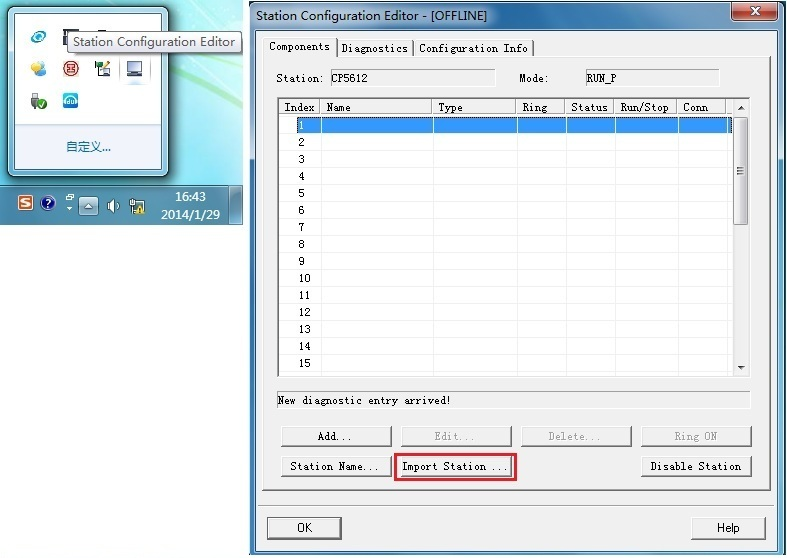
图10. OPC SERVER 站配置
导入完成后，OPC SERVER 站配置也就完成。如图 11 所示。
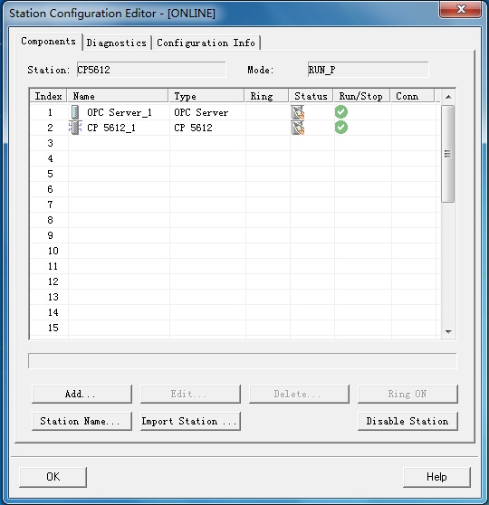
图11. OPC SERVER 站配置完成
将 S7-1200 项目下载到 PLC 中，此时 CM1243-5 的 DIAG 指示灯还是红闪，表示 DP 主从通信并未建立起来，这是因为 OPC Server 默认处于未激活状态，PC Station 作为 DP 从站还没有生效，需要启动一个 OPC 客户端来激活服务器。按以下步骤启动一个 OPC 客户端。
从电脑“开始”菜单中，执行 SIMATIC NET 的 OPC Scout V10。如图 12 所示。
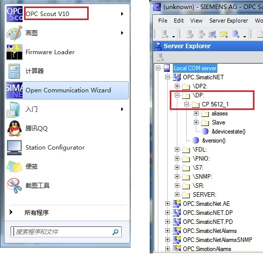
图12. 执行 OPC Scout V10
在 OPC Scout V10 中添加输入输出变量，在 DA view1 中对输出进行赋值，如图 13 所示。
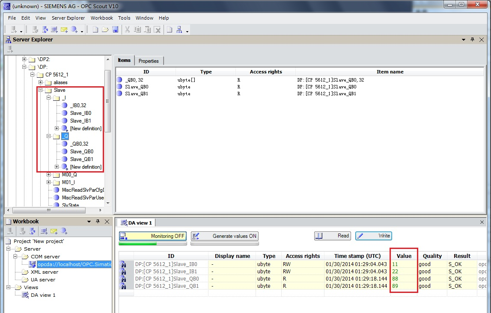
图13. OPC Scout V10 变量测试
在 S7-1200 项目的监控表中监视相应的变量，如图 14所示。
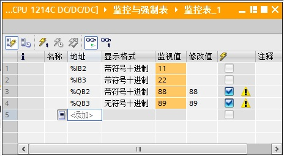
图14. S7-1200 变量测试